Debrecen · est. 2003Hajdú-Bihar · országszerteB2B & magán
Árnyék, precízen szabva az
épületre.
Vajda Gyula vagyok, redőnyös és árnyékolástechnikai szakember Debrecenben. Generálkivitelezőknek, építőipari partnereknek és magánszemélyeknek dolgozom: pontos felmérés, gyártói minőség, megbízható beépítés — több mint 22 éve.
Modern alumínium és műanyag rendszerek, motoros és kézi működtetéssel — a kézi felhúzós redőnytől a motoros zip screenig. Minden termékcsalád egyedi méretre, beépítési csomóponttal, gyártói garanciával. Vidd az egeret a kártyára (mobilon koppints rá) a részletekért.
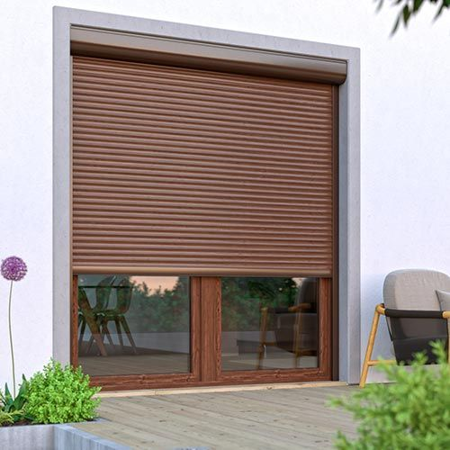
Tokos & vakolható redőny
Utólag és építés közben szerelhető rendszerek. Hőhídmentes kivitelezés, csendes üzem, tisztán illeszkedő tok. Műanyag és alumínium profilokkal.
PVC · ALU · ALU EXTRUDÁLT
Részletek →
Tokos & vakolható redőny
Utólag és új építésbe egyaránt szerelhető
Hőhídmentes tok, halk működés
Kézi felhúzós, gurtnis, hevederes vagy motoros
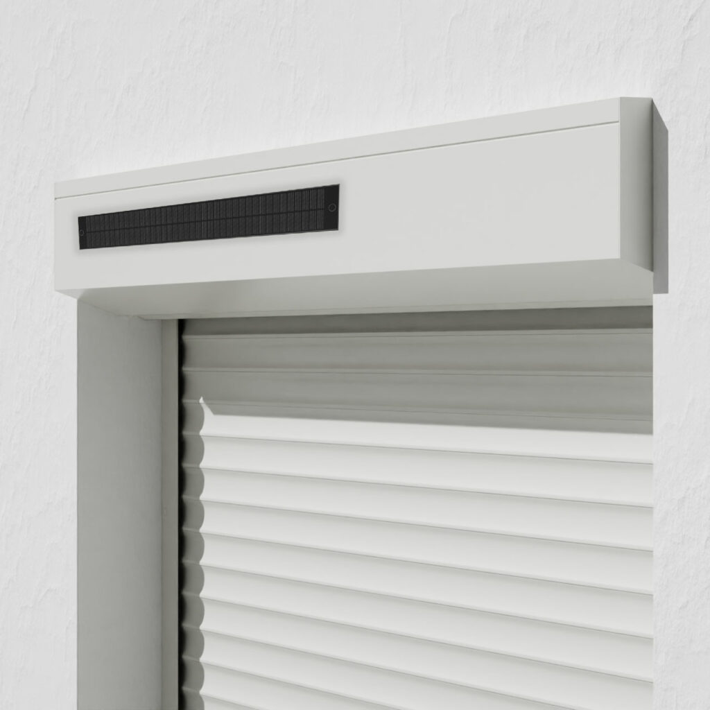
Motoros & okos redőny
Somfy és Becker meghajtások, fali kapcsoló, távirányító, napérzékelő, időzítés. Smart-home integráció KNX, Loxone, Tahoma és Apple Home rendszerekhez.
SOMFY · BECKER · TAHOMA
Részletek →
Motoros & okos redőny
Somfy és Becker meghajtás, halk üzem
Távirányító, napérzékelő, időzítés
KNX · Loxone · Tahoma · Apple Home
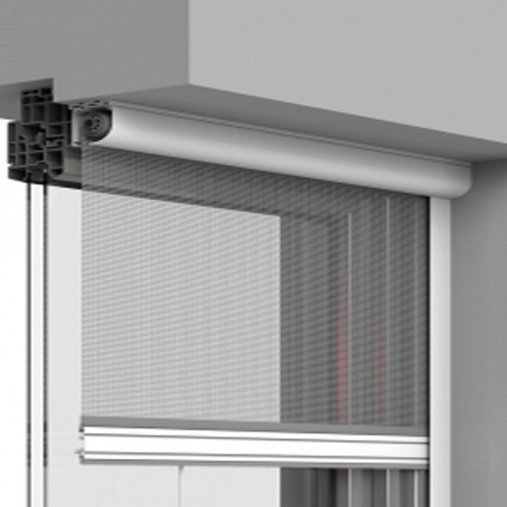
Szúnyogháló rendszerek
Fix kerettel, pliszé harmonikás, rolós és ajtós megoldások. Üvegszálas, alu és pollenszűrő háló — házi kedvencbarát kivitelben is.
FIX · ROLÓS · PLISZÉ · AJTÓS
Részletek →
Szúnyogháló rendszerek
Fix, rolós, pliszé harmonikás és ajtós kivitel
Pliszé szúnyogháló minden ablakra
Üvegszálas, alu és pollenszűrő, kedvenc-barát háló
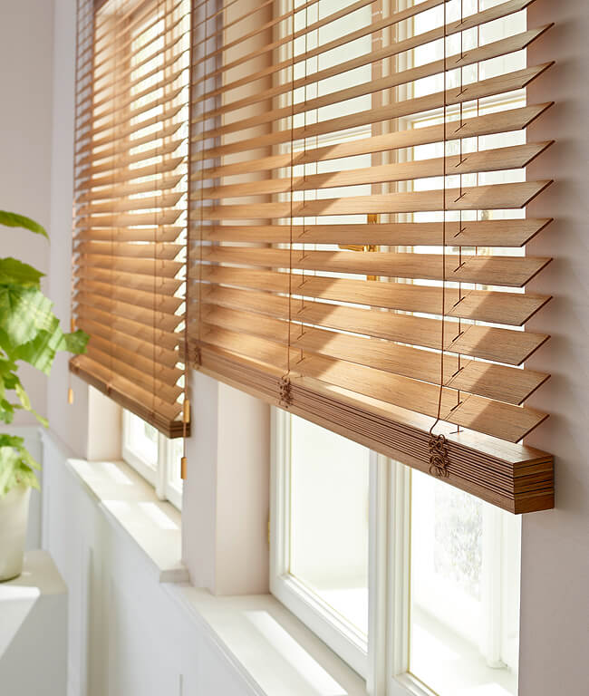
Belső árnyékolók
Sötétítő és fényáteresztő roló, sávroló, reluxa és pliszé függöny — minden ablakra, akár tetőtéri és ferde ablakra is.
ROLÓ · SÁVROLÓ · RELUXA · PLISZÉ
Részletek →
Belső árnyékolók
Sötétítő és fényáteresztő roló
Sávroló, reluxa és pliszé függöny
Egyenes, ferde és tetőtéri ablakra egyaránt
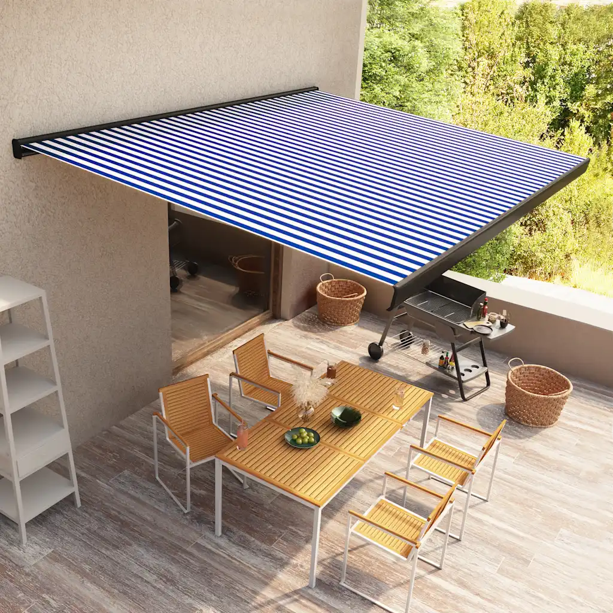
Karos & kazettás napellenző
Terasz, étterem-terasz, erkély árnyékolása. Karos, kazettás és féltető kivitel akár 7 m hosszúságban — szélérzékelővel is.
7 M-IG · MOTOROS · SZÉLÉRZ.
Részletek →
Karos & kazettás napellenző
Karos, kazettás és féltető kivitel
Terasz, étterem-terasz, erkély fölé
Akár 7 m széles, motoros, szélérzékelővel
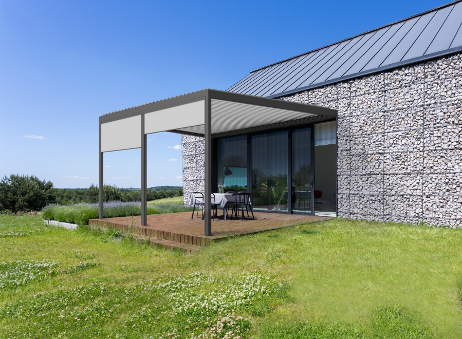
Külső árnyékoló & zip screen
Vezetősínes textilárnyékoló — szélálló kivitel, hatékony hővédelem nyáron, természetes fény bent. Modern építészeti homlokzatokhoz.
ZIP · SCREEN · HŐVÉDELEM
Részletek →
Külső árnyékoló & zip screen
Vezetősínes, szélálló textilárnyékoló
Hatékony nyári hővédelem, természetes fény bent
Modern építészeti homlokzatokhoz
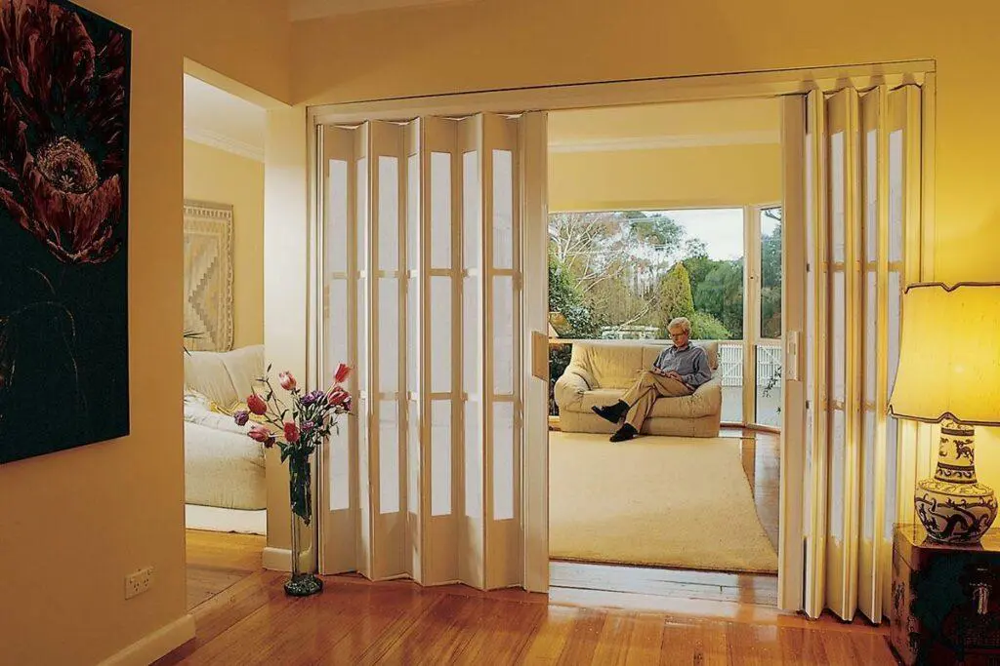
Harmonikaajtó & térelválasztó
Beltéri térelválasztáshoz — alumínium és műanyag profilszerkezet, halk vezetősín, sima nyitás. Egyedi méretre, fakihatású fóliákkal.
PVC · ALU · 30+ DEKOR
Részletek →
Harmonikaajtó & térelválasztó
Beltéri térelválasztás egyedi méretre
Halk vezetősín, sima nyitás
Alumínium és PVC, fakihatású fóliákkal
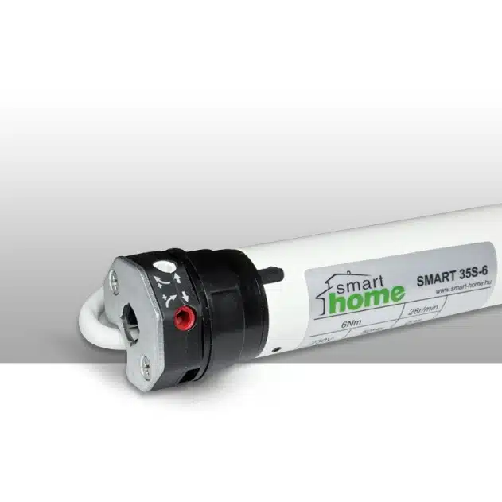
Szervíz, javítás, motorcsere
Bármilyen márkájú régi redőny szervízelése: gurtni-, hevedercsere, motorral való felszerelés, lamellapótlás, mechanika javítás 48 órán belül.
2003 óta foglalkozom árnyékolástechnikával. Ez idő alatt családi házak, irodaházak, panelek, ipari csarnokok, éttermek és társasházak felmérését, szállítását és beépítését végeztem el — magam, a saját csapatommal.
Nem hálózat vagyok, nem közvetítő. Felméréstől a végátadásig egy kézben tartom a folyamatot: ez az, amitől az építőipari partnereim számon kérhető határidőt kapnak, a magánügyfeleim pedig rendelkezésre álló embert, amikor szervízre van szükség.
Nyitva kommunikálok arról, mit lehet — és mit nem érdemes. Ha van jobb megoldás, azt javaslom. A pénzedet a megfelelő helyre tesszük.
22 év szakmai tapasztalat
2003 óta Debrecenben
Somfy partner
Motoros meghajtások
Aluprof gyártói kapcsolat
Redőny- és árnyékoló profilok
HELLA partneri kapcsolat
Külső árnyékolástechnika
03 — Referenciák
Megépített munkáim.
Egy válogatás az elmúlt évek munkáiból — belső roló, napellenző, pergola, külső árnyékoló és szúnyogháló. Ide csak az kerül, amit én magam készítettem. Kattints a képekre a nagyításhoz.
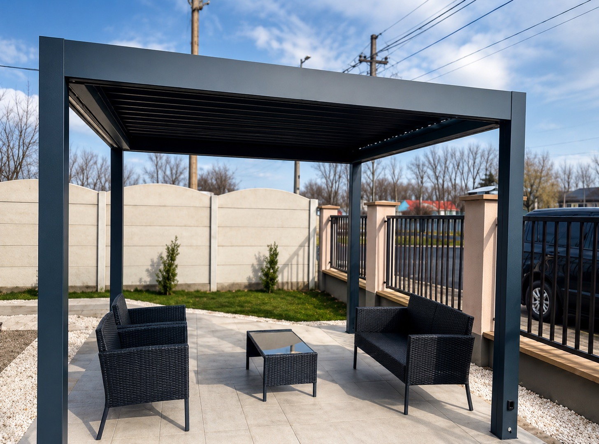
// 01 — TERASZ2024
Alumínium pergolaBioklimatikus lamellatető terasz fölé
PERGOLA
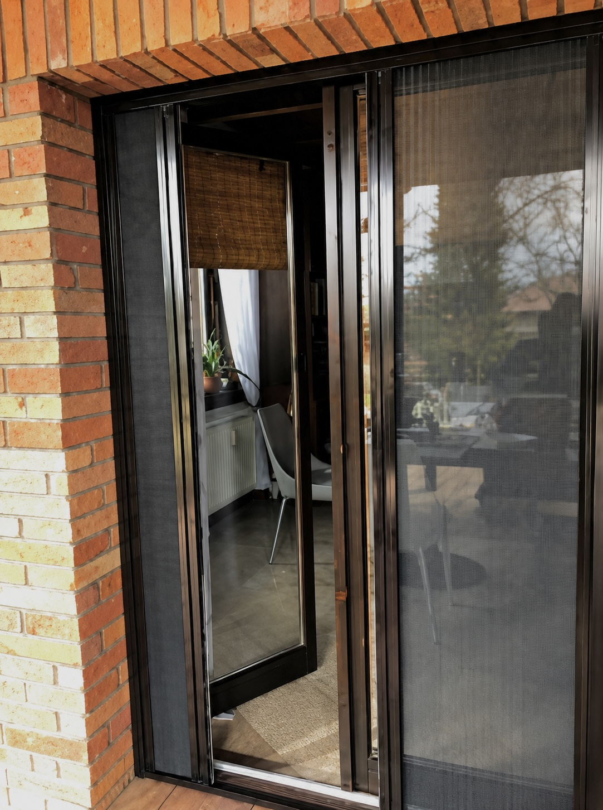
// 02 — BEJÁRAT2024
Pliszé ajtó szúnyoghálóBejárati ajtóra, egyedi méretre
Ügyfélkörünk gerincét építőipari vállalkozások adják. Tudjuk, hogyan mozog egy építkezés: tervezési fázistól számon kérhető határidő, gyártási logisztika, csomóponti kompatibilitás, és egyértelmű felelősségvállalás a végátadásig. Egyedi keretszerződéseket kötünk projektvolumen mellett.
Tartható határidőGyártási és kivitelezési ütemezés írásban
→
Egyedi árProjektre szabott, tételes árazás
→
// Visszatérő partnerek & gyártói kapcsolatok
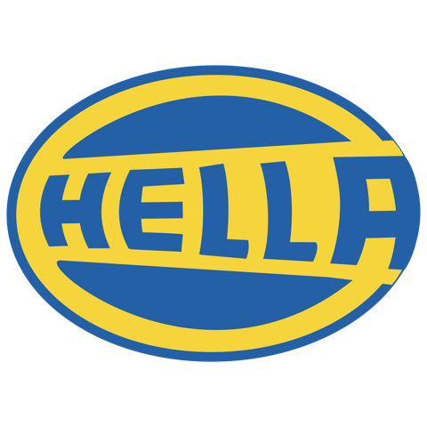
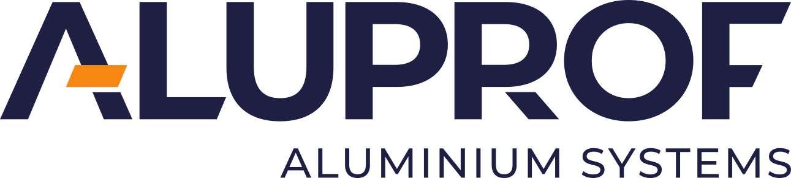
05 — Folyamat
Felméréstől a végátadásig — 5 lépésben.
Minden projektnek ugyanaz a gerince, függetlenül attól, hogy 4 vagy 400 redőnyről beszélünk. Ez teszi kiszámíthatóvá az időt és az árat is.
I.
Megkeresés & tisztázás
Telefonon vagy űrlapon felveszed velem a kapcsolatot. 24 órán belül visszahívlak és letisztázzuk a projektet — méret, mennyiség, határidő.
0. nap
II.
Helyszíni felmérés
Kijövök a helyszínre — Debrecenben & környékén ingyenesen. Pontos méret, beépítési csomópont, fotódokumentáció.
1–3. nap
III.
Tételes árajánlat
48 órán belül írásban — minden tétel külön: termék, szín, motor, szúnyogháló, kivitelezés. Nincs apró betűs rész.
2–5. nap
IV.
Gyártás
Megrendeléstől 10–15 nap. Saját raktárkészletből szerelhető tételeket azonnal indítjuk.
10–15. nap
V.
Beépítés & átadás
Tiszta munkavégzés, takarítás után. Egyenkénti tesztelés és betanítás — átadok mindent működőképesen, használatra készen.
15–17. nap
06 — Vélemények
Amit a partnereim és ügyfeleim mondanak.
Igazolt visszajelzések Google, Facebook és közvetlen e-mail csatornákról. Az alábbiakat hozzájárulással közlöm.
"
★ ★ ★ ★ ★
Három projekten dolgoztunk együtt Gyulával — társasház, irodaház, családi ház. Egyszer sem csúszott a határidő, és olyan szinten számon kérhető, hogy nem kell aggódnom a kivitelezés miatt.
KZ
Kovács Zoltán
Generálkivitelező · ÉpítEx Kft.
"
★ ★ ★ ★ ★
Új építésű családi házunkba 14 motoros redőnyt és külső árnyékolót csinált. Pontos volt, tiszta a munkavégzés, és tényleg utánajött, hogy minden a helyén van. Ajánlom mindenkinek.
NE
Nagy Eszter
Magánügyfél · Debrecen-Józsa
"
★ ★ ★ ★ ★
Társasházkezelőként több épületünkben cseréltettünk redőnyt és szúnyoghálót Gyulával. Egyeztetés a lakókkal, ütemezés, tiszta munka — minden gördülékeny volt, és a határidőt is tartotta.
Az ár a méretektől, a profil típusától (műanyag, alumínium habosított, alu extrudált), a működtetéstől (gurtni, hevederes, motoros, okos) és az opcionális szúnyoghálótól függ. Hogy egy nagyságrend látható legyen: egy átlagos méretű (120×150 cm) műanyag, gurtnis tokos redőny 38–55 ezer forint körül indul kivitelezéssel. Ingyenes helyszíni felmérés után részletes, tételes árajánlatot adok 48 órán belül.
Igen — ügyfélkörünk jelentős részét generálkivitelezők, építőipari vállalkozások és társasházkezelők adják. Társasházi, ipari és lakóparki projekteknél bekapcsolódunk a tervezési fázistól a végátadásig. Évi 5+ projekt fölött keretszerződéses partnerséget kínálok kedvezőbb árazással.
Helyszíni felmérés általában 24–72 órán belül. Egyedi méretű termékek gyártási ideje 10–15 nap, a kivitelezés a legtöbb családi háznál 1 nap alatt elkészül. Ipari és társasházi munkáknál a beépítés ütemezetten, az építkezés készültségi fokához igazítva történik.
Minden új termékre 1 év teljes körű garanciát vállalok, a motorra 4 évet (Somfy & Becker hivatalos kondíciókkal). A szakszerű beépítésre élethosszig tartó beépítési garanciát adok — ha bármi probléma adódik a beépítéssel kapcsolatban, kijövök és megoldom. Mindezt írásban, számla mellett kapod.
20 évnél fiatalabb, alumínium szerkezetű redőnyök legtöbbször javíthatók — gurtni-, motorcsere, lamellapótlás. Régi műanyag, deformálódott vagy hőhídas redőnyöknél azonban általában a teljes csere a gazdaságos megoldás, mert egy modern, hőszigetelt rendszer évi több tízezer forintos energia-megtakarítást is jelenthet. Ezt mindig őszintén megmondom — felesleges javítást nem ajánlok.
Igen. Építészirodákkal és kivitelezőkkel rendszeresen dolgozom — beépítési csomópontokat (DWG/PDF), gyártói műszaki adatlapokat, BIM-objektumokat (IFC), színmintákat és RAL-skálát biztosítok a tervezési fázishoz. Térítésmentesen, NDA mellett akár.
Magánügyfeleknek 50% előleg gyártás indításakor, 50% végszámla a végátadáskor. B2B ügyfeleknek részszámlás konstrukció, 30 napos átutalási határidővel. Minden számlán tételes elszámolás, ÁFA-bevallással. Készpénz, átutalás, bankkártya egyaránt működik.
09 — Vegyük fel a kapcsolatot
Kérj ingyenes felmérést és tételes ajánlatot.
24 órán belül visszahívlak a megkeresésedre. Hajdú-Bihar megyében a helyszíni felmérés ingyenes és kötelezettségmentes — az árajánlatot 48 órán belül írásban megkapod.